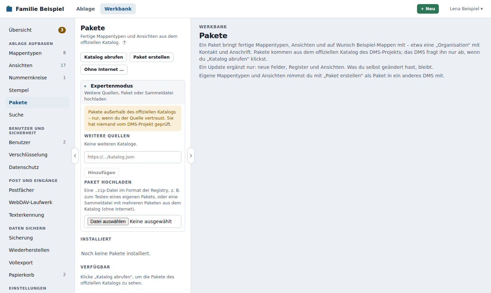

Pakete¶
Ein Paket bringt fertige Mappentypen, Ansichten und auf Wunsch Beispiel-Mappen mit – etwa das Basis-Paket mit dem Mappentyp „Organisation“ für Firmen, Behörden, Ärzte und Versicherungen. Statt Feld für Feld in der Werkbank zu bauen, installierst du es mit wenigen Klicks unter Werkbank → Pakete.
Pakete kommen aus dem offiziellen Katalog des Ablago-Projekts (dms-registry). Jedes Paket dort ist Open Source und wurde vom Maintainer freigegeben. Meist sind es Konfigurationspakete (Mappentypen, Ansichten, Beispiele). Pakete mit Code lassen sich installieren und einstellen, ihr Code läuft aber erst mit dem Paket-Läufer.
Katalog abrufen¶
Ablago fragt den Katalog nur auf Knopfdruck ab, nie im Hintergrund: Klicke Katalog abrufen. Die Seite zeigt dann zwei Listen:
- Installiert – Pakete in dieser Installation, mit Version und Herkunft
- Verfügbar – Pakete aus dem Katalog, die noch nicht installiert sind
Ein Klick auf ein Paket zeigt Name, Beschreibung, Version, Lizenz, Autor, die nötige Ablago-Version, Abhängigkeiten, die enthaltenen Mappentypen und Ansichten sowie Links zum README und zu den Änderungen.
Ablago lädt den Katalog von https://catalog.ablago.app/katalog.json und prüft seine Signatur (siehe Herkunft). Weiterleitungen folgt es dabei nur auf https://-Adressen. Dafür muss Ablago selbst ins Internet kommen. Einen Proxy für ausgehende Abrufe kann Ablago nicht einstellen. Ohne Internetzugang lädst du ein Paket als Datei hoch (siehe Expertenmodus).
Installieren¶
- Wähle ein Paket unter Verfügbar und ggf. eine ältere Version.
- Klicke Installieren …. Es öffnet sich der gemeinsame Ablauf: oben das Paket, darunter, was es braucht („Braucht: …“), und seine Ergänzungen als Häkchen – bei der Texterkennung etwa Weitere Sprachen? mit Französisch, Spanisch, Türkisch …
- Klicke Weiter mit … Paketen. Auf einer Seite fragt Ablago jetzt alles, was nötig ist, und nur das:
- bei Paketen mit Code was der Code darf – je Paket als Liste, Ereignisse als Unterliste, mit ? zur Erklärung (siehe Rechte eines Pakets). Darunter ein Haken für alle, sonst bleibt Installieren grau
- Namen, die es schon gibt: Gibt es einen Mappentyp oder eine Ansicht (auf oberster Ebene) mit gleichem Namen schon, schlägt Ablago einen anderen vor, z. B. „Organisation (Basis)“. Alles andere bekommt den Namen aus dem Paket, ohne Rückfrage
- Beispiel-Mappen – nur, wenn du den Haken setzt
- Einstellungen, ohne die ein Paket nicht läuft – oder Später ausfüllen (siehe Einstellungen)
- Unten steht die Zusammenfassung: welche Pakete in welcher Reihenfolge, wie viele Mappentypen und Ansichten, Beispiele, Pakete mit Code. Darunter die Hinweise des Pakets, z. B. ob es gleichbedeutende Wörter für die Suche mitbringt (Wortlisten, siehe Suche) oder Mappentypen aus Ablago nutzt.
- Klicke Installieren.
Vor dem Anlegen prüft Ablago:
- ob die eigene Version passt (sonst erst Ablago aktualisieren),
- ob alle Abhängigkeiten installiert sind und in einer passenden Version,
- ob das heruntergeladene Archiv zur Prüfsumme (SHA-256) im Katalog passt. Passt sie nicht, installiert Ablago nichts.
Angelegt wird über dieselben Funktionen wie in der Werkbank, mit allen Prüfregeln. Die Kennungen bekommen das Paket-Präfix (<paket>_<schluessel>), damit sich Pakete nicht in die Quere kommen; Verweise auf Mappentypen anderer Pakete löst Ablago auf. Scheitert etwas, nimmt Ablago alles zurück – es bleibt nichts halb angelegt.
Mehrere Pakete in einem Schritt installieren¶
Ob ein Paket mit seinen Abhängigkeiten, die Texterkennung mit drei Sprachen oder zehn Pakete im Einrichtungsassistenten oder aus einer Sammeldatei: Ablago installiert alles in einem Ablauf – ohne Kette von Rückfragen je Paket.
- Auswahl: Die Pakete als Liste. Was ein Paket braucht, kommt automatisch mit und ist mit „kommt mit – gebraucht von …“ markiert – auch Pakete mit Code. Ergänzungen eines Pakets (Pakete, die es erweitern, z. B. die Zusatzsprachen der Texterkennung) stehen als Häkchen direkt darunter, sobald du das Paket wählst; jede Ergänzung bleibt ein eigenes Paket mit eigener Version und eigenem Update.
- Jede Frage einmal, mit Ausnahme je Paket:
- Herkunft (nur außerhalb des offiziellen Katalogs bzw. ohne gültige Signatur): ein Haken für alle.
- Rechte: alle Pakete mit Code untereinander, je Paket mit seinen Rechten, und ein Haken „Ich erlaube diesen Paketen jeweils diese Rechte“. Jedes Paket bekommt trotzdem nur seine eigenen Rechte und sein eigenes Dienstkonto.
- Namen: nur Mappentypen und Ansichten, deren Name schon vergeben ist.
- Beispiel-Mappen: ein Haken für alle Pakete mit Beispielen; unter Je Paket abwählen nimmst du einzelne heraus.
- Einstellungen: die Pflichtfelder aller Pakete, je Paket ein Kasten. Eine Dienst-Adresse ist nie voreingestellt – Beispiel übernehmen trägt das Beispiel des Pakets ein, und du bestätigst die Adressen mit einem Haken. Mit Später ausfüllen wird das Paket trotzdem installiert, steht aber auf Einstellungen nötig, und die Übersicht der Werkbank zeigt dir die Aufgabe „… braucht noch Einstellungen“, bis du sie ausgefüllt hast.
- Zusammenfassung und ein Knopf „… Pakete installieren“.
Ablago prüft vor dem ersten Paket alles: Herkunft, Rechte, Namen, Einstellungen und Dienst-Adressen. Fehlt etwas, installiert es nichts. Dann geht es Paket für Paket vor, Abhängigkeiten zuerst. Scheitert ein Paket trotzdem (z. B. ein ungültiges Beispiel), ist dieses Paket vollständig zurückgenommen; die übrigen werden weiter installiert. Nur Pakete, die das gescheiterte brauchen, fallen mit Begründung weg. Lässt sich ein Paket schon gar nicht laden (z. B. keine Verbindung), zeigt Ablago das vor dem Installieren an, mit Nochmal versuchen – die übrigen kannst du trotzdem installieren. Am Ende nennt das Ergebnis, was installiert ist und was nicht, jeweils mit Grund; Fehlendes holst du später unter Werkbank → Pakete nach.
Deine Bestätigung gilt nur für genau die Rechte, die du gesehen hast. Ändern sie sich bis zum Klick (z. B. weil der Katalog inzwischen eine neue Version mit mehr Rechten hat), zeigt Ablago die neuen Rechte und fragt noch einmal. Während eine Installation läuft, warten andere Installationen, Updates und das Entfernen von Paketen – auch auf einem zweiten Server mit derselben Datenbank.
Nachträglich: Unter Werkbank → Pakete → Paket stehen die Ergänzungen, die es dazu im Katalog gibt (z. B. Weitere Sprachen bei der Texterkennung), mit Auswählen … – danach derselbe Ablauf. Die Seite der Texterkennung schlägt Sprachen vor, die in deinen Dokumenten vorkommen.
Mappentypen aus Paketen tragen in Werkbank → Mappentypen den Hinweis Paket …. Du kannst sie danach wie jeden anderen Mappentyp anpassen.
Über die Katalog-Webseite¶
Den Katalog gibt es auch als Webseite: Paketkatalog (auch auf der Startseite der Handbücher). Dort siehst du je Paket die Beschreibung, was angelegt wird, Rechte, Änderungen und ältere Versionen.
- Klicke beim Paket In meinem Ablago installieren.
- Beim ersten Mal fragt die Seite nach der Adresse deines Ablago, z. B.
https://dms.example.org. Sie merkt sie sich nur in deinem Browser; über Ablago-Adresse oben änderst du sie. Die Webseite sendet nichts an dein Ablago und speichert keine Zugangsdaten. - Dein Ablago öffnet Werkbank → Pakete mit der Vorschau genau dieses Pakets (Adresse
…/werkbank/pakete?installieren=<paket>@<version>). Bist du nicht angemeldet, meldest du dich zuerst an und landest danach wieder dort. Andere Benutzer sehen einen Hinweis, dass nur Administratoren Pakete installieren. - Ablago holt Paket und Prüfsumme selbst aus dem offiziellen Katalog – Angaben im Link, die auf andere Quellen zeigen, zählen nicht. Gibt es das Paket oder die Version dort nicht, sagt Ablago es.
- Installiert wird erst, wenn du auf „Installieren“ klickst. Der Link allein ändert nichts. Ist das Paket schon installiert, zeigt die Vorschau das; ein Update bietet sie an, wenn der Link eine neuere Version nennt.
Im Katalog ansehen¶
Unter Werkbank → Pakete steht über der Liste Verfügbar der Link Im Katalog ansehen; bei jedem Paket aus dem offiziellen Katalog gibt es ihn zusätzlich unter Mehr für die Seite genau dieses Pakets. Der Link öffnet die Katalog-Webseite in einem neuen Tab und gibt ihr die Version deines Ablago mit. Die Webseite zeigt dann gleich, welche Pakete zu deinem Ablago passen, und filtert auf Wunsch danach – du musst die Version nicht suchen und eintippen.
Was übertragen wird: nichts außer dem Seitenaufruf selbst, wie bei jeder anderen Webseite. Die Version steht im Fragment der Adresse, also hinter dem #, z. B. https://catalog.ablago.app/#dms=0.146.0. Diesen Teil schickt der Browser nie an den Server; er steht in keinem Zugriffsprotokoll. Nur das Skript der Katalogseite liest ihn in deinem Browser, merkt sich die Version dort und entfernt das Fragment gleich wieder aus der Adresse, damit sie nicht mit einem geteilten Link weitergeht.
- Im Fragment steht nur die Version – keine Adresse deines Ablago, kein Haushaltsname, keine Liste deiner Pakete, keine Kennung.
- Der Link öffnet ohne Herkunftsadresse (
rel="noopener noreferrer"): Die Katalogseite erfährt nicht, von welcher Adresse du kommst, und hat keinen Zugriff auf den Tab deines Ablago. - Ist der offizielle Katalog gerade nicht erreichbar (nach Katalog abrufen), steht statt des Links ein Hinweis auf Pakete ohne Internet.
- Weitere Kataloge aus dem Expertenmodus haben keine bekannte Webseite; den Link gibt es nur für den offiziellen Katalog.
Herkunft: signiert oder nicht¶
Das Ablago-Projekt signiert den offiziellen Katalog (ab Ablago 0.141.0). Weil der Katalog die Prüfsumme jedes Pakets enthält, belegt eine einzige Signatur, dass alle Pakete darin vom Ablago-Projekt stammen. Die Vorschau zeigt deshalb vor jeder Installation eine Zeile Herkunft:
| Herkunft | Bedeutung | Was du tust |
|---|---|---|
| signiert vom Ablago-Projekt (Katalog vom …) | Katalog und Paket sind nachweislich vom Ablago-Projekt und unverändert. | Nichts – installieren. |
| signiert vom Anbieter dieses Katalogs | Ein weiterer Katalog mit eigenem Schlüssel, dessen Fingerabdruck du bestätigt hast. | Nichts – du hast dem Anbieter beim Hinzufügen vertraut. |
| nicht signiert | Niemand belegt, woher das Paket kommt. | Nur installieren, wenn du die Quelle kennst; du bestätigst die Herkunft mit einem Haken. |
| Signatur ungültig | Der Katalog ist verändert oder nicht vom Ablago-Projekt. Ablago vermerkt das im Protokoll. | Im Zweifel nicht installieren und später erneut abrufen. Installieren geht nur mit ausdrücklicher Bestätigung. |
Übergang: In dieser Version gibt es beim offiziellen Katalog ohne Signatur nur einen Hinweis. Eine Minor-Version später verlangt Ablago die Signatur; Pakete aus weiteren Quellen, hochgeladene Pakete und Sammeldateien ohne Signatur gehen dann weiter mit Bestätigung.
Älterer Katalog: Ablago merkt sich, welchen Stand des Katalogs es zuletzt signiert gesehen hat. Bekommt es danach online einen älteren signierten Katalog, nimmt es ihn nicht – so kann niemand einen alten Katalog mit einer inzwischen korrigierten Paketversion unterschieben. Die Meldung nennt beide Zeitpunkte. Meist hilft es, später noch einmal abzurufen; bleibt es so, melde es dem Ablago-Projekt.
Ältere Versionen: Ablago 0.141.0 bis 0.144.1 kennen nur Testschlüssel. Sobald das Ablago-Projekt den Katalog mit seinen echten Schlüsseln signiert, zeigen sie beim offiziellen Katalog „Signatur ungültig“ – aktualisiere dann Ablago. Die Fingerabdrücke der echten Schlüssel stehen in der Sicherheitsrichtlinie.
Installierte Pakete¶
Je Paket merkt sich Ablago Version, Herkunft (der Katalog), wann und von wem es installiert bzw. aktualisiert wurde und welche Mappentypen und Ansichten dazugehören. Diese Angaben sind Teil der Sicherung und des Vollexports (struktur/pakete.json). Installieren, Aktualisieren und Entfernen stehen im Protokoll.
Aktualisieren¶
Auf neue Versionen prüfen fragt den Katalog ab (auf Knopfdruck) und markiert Pakete, für die es Neueres gibt. Im Paket zeigt Auf … aktualisieren … eine Vorschau mit dem, was dazukommt, und einem Link zu den Änderungen.
Ein Update ergänzt nur:
- neue Mappentypen und Ansichten,
- neue Felder und Register bei vorhandenen Mappentypen.
Es löscht nichts und überschreibt nichts, was du selbst geändert hast: Hast du einen Mappentyp umbenannt, Felder ergänzt oder eine Ansicht gelöscht, bleibt das so.
Text in Verweise umwandeln¶
Manche Pakete hatten früher ein Textfeld, wo eigentlich ein Verweis hingehört – zum Beispiel „Halter: Lena Muster“ am Fahrzeug statt eines Verweises auf die Person Lena Muster. Eine neuere Version des Pakets bringt dafür ein Verweisfeld mit und sagt, aus welchem Textfeld es sich füllen lässt. Updates ändern nichts heimlich:
- Das Update legt das Verweisfeld zusätzlich an. Das alte Textfeld bleibt mit allen Werten, nichts wird umgeschrieben. Die Vorschau des Updates sagt schon, wie viele Angaben sich danach umwandeln lassen.
- Danach steht im Paket unter Text in Verweise umwandeln, was offen ist, etwa „Fahrzeug – Halter: 3 Angaben in „Halter“ (Text) können Verweise auf Person werden“.
Vorschau … zeigt je Name einen Vorschlag, den du in jeder Zeile ändern kannst:
- vorhandene Person: gleicher Name, ohne Groß- und Kleinschreibung und Leerzeichen („lena muster“ = „Lena Muster“, auch „Muster Lena“). Passen mehrere, steht das dabei – wähle dann die richtige.
- Neu anlegen: legt eine Person mit Vor- und Nachname an. Vorgeschlagen, wenn der Text wie ein Name aussieht.
- Überspringen: Der Text bleibt, z. B. bei „Familie“ oder „Auto MU-ST 123“.
Darf ein Feld mehrere Verweise haben (Inhaber eines Kontos, Versicherte), teilt Ablago den Text an „und“, Komma, Schrägstrich oder „&“: „Lena und Tom Muster“ wird zu „Lena Muster“ und „Tom Muster“. Umgewandelt wird eine Mappe nur, wenn jeder ihrer Namen eine Person bekommt.
Ausgelassen werden Mappen, die du nicht bearbeiten darfst, Mappen im Archivmodus innerhalb der Aufbewahrungsfrist und Mappen, deren Verweis schon gesetzt ist. Die Vorschau nennt jede mit Grund.
Umwandeln setzt den Verweis und leert das Textfeld. Jede Änderung steht in der Historie der Mappe („Paket-Update: Text in Verweis umgewandelt“). Außerdem:
- Das alte Textfeld ist keine Pflicht mehr. Ist es leer, zeigt die Ablage es in der Mappe nicht mehr.
- Titel-Vorlage und Trefferlisten zeigen den Verweis statt des Texts, das Verweisfeld rückt an die Stelle des Textfelds. Mappen, die du übersprungen hast, zeigen dort weiter ihren Text.
Rückgängig … unter „Bisherige Umwandlungen“ nimmt einen ganzen Vorgang zurück: Text zurück, Verweis leer, neu angelegte Personen in den Papierkorb, sofern nichts anderes mehr auf sie verweist, Mappentyp wie vorher. Was seit der Umwandlung jemand geändert hat, bleibt und wird genannt. Die Vorgänge sind Teil der Sicherung.
Für Paket-Autoren steht das Format (aus_text) in den Regeln der Registry.
Entfernen¶
Entfernen löscht die Mappentypen, Ansichten und Wortlisten des Pakets und seinen Eintrag. Das geht nur,
- solange es keine Mappen dieser Mappentypen gibt (auch nicht im Papierkorb) und
- kein anderes Paket davon abhängt.
Sonst nennt Ablago die Gründe. Beispiel-Mappen löschst du vorher wie andere Mappen.
Einstellungen¶
Manche Pakete brauchen Einstellungen – etwa Regeln, nach denen sie Post zuordnen, oder ein Zugangsschlüssel für einen Dienst. Das Paket beschreibt sie nur; Ablago baut daraus ein Formular, prüft die Werte und speichert sie. Du findest es unter Werkbank → Pakete → Paket → Reiter „Einstellungen“ – den Reiter gibt es nur bei Paketen, die Einstellungen haben.
- Abschnitte mit Feldern und Listen gleich aufgebauter Einträge (z. B. eine Regel je Eintrag) mit + Eintrag, Löschen und – wenn das Paket es erlaubt – Sortieren mit ↑/↓.
- Felder wie bei den Mappentypen: Text, mehrzeiliger Text, Zahl, Ja/Nein, Datum, Auswahl, Mehrfachauswahl und Verweise auf einen Mappentyp, ein Feld eines Mappentyps, einen Benutzer, eine Rolle oder eine Ansicht. Verweise wählst du aus Listen; gespeichert wird die feste Id, nicht der Name – Umbenennen schadet also nicht.
- Dienst-Adresse (z. B. eines KI-Dienstes): Die einzige Adresse, zu der das Paket außer den festen Adressen aus seinem Manifest ins Netz darf – siehe Dienst-Adresse. Sie ist nie voreingestellt; im leeren Feld steht höchstens ein Beispiel. Beim Speichern einer neuen oder geänderten Adresse fragt Ablago nach und zeigt, wohin Daten gehen.
- Geheimnisse (z. B. Zugangsdaten) verschlüsselt Ablago mit seinem Schlüssel (siehe Verschlüsselung). Nach dem Speichern zeigt es sie nie wieder an, nur gesetzt mit Ändern und Löschen.
- Beim Speichern prüft Ablago Mappentyp, Pflichtfelder, Auswahlwerte und ob Verweise existieren, und zeigt Fehler am Feld.
- Aktionen des Pakets erscheinen als Knöpfe (z. B. „Regeln jetzt anwenden“), die Antwort des Pakets steht darüber. Eine Zeitgrenze verhindert, dass ein Knopf hängt.
- Der Status (letzter Lauf, Meldungen) kommt vom Paket selbst und ist schreibgeschützt.
Lebenszyklus:
- Installieren setzt die Vorgaben. Pflichtfelder ohne Vorgabe fragt der Ablauf gleich mit ab; wählst du Später ausfüllen, steht das Paket auf Einstellungen nötig, die Übersicht der Werkbank nennt es als Aufgabe, und es läuft erst danach.
- Aktualisieren: Neue Felder bekommen ihre Vorgabe, vorhandene Werte bleiben. Felder, die die neue Version nicht mehr kennt, werden entfernt – die Vorschau vor dem Update nennt sie.
- Entfernen fragt, ob die Einstellungen für eine spätere Neuinstallation bleiben sollen (Standard: nein).
Die Einstellungen sind Teil der Sicherung; Geheimnisse bleiben dabei verschlüsselt und werden beim Schlüsselwechsel mit umgeschlüsselt. Über die API v1 sind sie nicht lesbar; das Paket selbst bekommt sie über den Paket-Läufer. Das Protokoll vermerkt „Einstellungen von Paket … geändert (Felder …)“ – nie die Werte von Geheimnissen. Nur Administratoren sehen und ändern Einstellungen.
Pakete mit Code¶
Manche Pakete bringen Code mit – etwa eine eigene Texterkennung oder Regeln, die neue Post zuordnen. Der Code reagiert auf Ereignisse (neue Post, hochgeladenes Dokument, fertige Texterkennung, fertiger Volltext, geänderte Einstellungen) und auf die Aktionen im Reiter „Einstellungen“. Ablago führt ihn im Paket-Läufer aus:
- Abgeschottet: Der Code ist WebAssembly und läuft in einem eigenen Prozess von Ablago, ohne Zugriff auf Dateien, Schlüssel oder Datenbank. Netzwerk und Internet erreicht er nur unter den Adressen, die das Paket angibt, und unter der Dienst-Adresse, die du in seinen Einstellungen einträgst – meist gar nicht.
- Nur bestätigte Rechte: Vor der Installation zeigt Ablago, was der Code darf – welche Mappentypen er lesen bzw. anlegen und ändern darf, ob er Dokumente lesen oder schreiben darf, ob er aufs Netzwerk oder Internet zugreifen darf und auf welche Ereignisse er reagiert (siehe Rechte eines Pakets und Ereignisse). Erst wenn du das bestätigst, installiert Ablago. Kommen mehrere Pakete mit Code zusammen (etwa eine Zusatzsprache samt Texterkennung), stehen alle Rechte aller Pakete auf einer Seite und du bestätigst sie einmal (siehe Mehrere Pakete in einem Schritt). Will ein Update mehr Rechte oder andere Adressen, fragt Ablago erneut.
- Dienstkonto: Für jedes Paket mit Code legt Ablago ein Dienstkonto „Paket Name“ an. Mit ihm arbeitet der Code über die API; die Historie zeigt deshalb, was ein Paket geändert hat. Dienstkonten erscheinen nicht unter Benutzer, melden sich nie an und können nie löschen – auch nicht mit Rechten auf alle Mappentypen. Benutzer und Passwörter sehen sie nicht.
- Grenzen: Jeder Aufruf hat höchstens 256 MB Speicher und 2 Minuten Zeit; es laufen höchstens zwei Aufrufe gleichzeitig. Was die Grenzen reißt, bricht ab, ohne Ablago zu stören.
- Wiederholen: Ereignisse merkt sich Ablago. Scheitert ein Aufruf, versucht es der Läufer nach 1, 5, 30, 120 und 360 Minuten erneut und gibt dann auf. Während einer Wartung (z. B. beim Wiederherstellen) ruht der Läufer.
Werkbank → Pakete → Paket zeigt im Abschnitt Paket-Läufer den Stand, die letzten Aufrufe mit Dauer und Speicher, offene und aufgegebene Ereignisse und das Protokoll des Pakets. Meldungen stehen zusätzlich im Protokoll von Ablago. Der Stand ist einer von diesen:
| Stand | Bedeutung |
|---|---|
| startet … | Der Läufer startet oder lädt das Modul des Pakets – etwa direkt nach der Installation. Die Seite fragt von selbst nach. |
| bereit – wartet auf das erste Ereignis | Das Modul ist geladen; das Paket wurde aber noch nie aufgerufen. Es läuft, sobald ein Ereignis kommt, auf das es reagiert, oder du eine Aktion auslöst. |
| bereit | Das Modul ist geladen und wurde schon aufgerufen. |
| abgestürzt um … – startet neu … | Der Läufer-Prozess ist abgestürzt. Ablago startet ihn nach einer kurzen Pause selbst neu (bei wiederholten Abstürzen wartet es länger, höchstens eine Minute). Ereignisse gehen dabei nicht verloren. |
| neu gestartet nach Absturz um … | Der Läufer läuft wieder; die Zeit nennt den letzten Absturz. Die Ursache steht im Protokoll von Ablago. |
| pausiert (Wartungsmodus) | Während einer Wartung ruht der Läufer. |
| Fehlermeldung in Rot | Das Modul ließ sich nicht laden (z. B. fehlt der Code nach einer Wiederherstellung) – das Paket neu installieren. |
Schlägt ein Update fehl, bleibt die alte Version mit ihrem alten Code installiert. Ein Paket darf höchstens 128 MB groß sein – das gilt für das Archiv beim Herunterladen, Hochladen und in der Sammeldatei ebenso wie für alle Dateien unter code/ zusammen. Ist ein Paket größer, nennt Ablago Größe und Grenze und lädt es gar nicht erst herunter.
Entfernen beendet den Code, löscht seine offenen Ereignisse und seinen Speicher und schaltet das Dienstkonto ab.
Volltext aus einem Paket
Setzt ein Paket den Volltext eines Dokuments (z. B. das Paket Texterkennung), vermerkt die Historie „Volltext gesetzt“ mit dem Namen des Pakets, und Ablago überschreibt diesen Text nicht.
Rechte eines Pakets¶
Vor der Installation zeigt die Vorschau unter „Das Paket enthält Code.“ eine Liste der Rechte. Hinter jedem Punkt führt ein ? zur passenden Stelle hier. Unter der Liste steht links der Haken „Ich erlaube dem Paket diese Rechte.“ – lies erst die Liste, dann setze den Haken. Ohne ihn bleibt Installieren gesperrt. Bei einem Update mit geänderten Rechten heißt der Haken „Die Rechte haben sich geändert. Ich erlaube sie.“; sind die Rechte gleich geblieben, steht dort nur „Die Rechte sind dieselben wie bisher.“
Was nicht in der Liste steht, darf der Code nicht. Benutzer und Passwörter sieht ein Paket nie, und löschen darf es nichts.
Mappen lesen¶
„Mappen lesen: Mappentypen“ – Der Code darf Mappen dieser Mappentypen lesen, mit allen Feldern und Verweisen. „alle Mappentypen“ heißt jede Mappe (außer Benutzern). Stammt ein Mappentyp aus einem anderen Paket, steht dessen Kennung in Klammern dahinter, z. B. „Organisation (basis)“; Post, Ablageort und Rolle bringt Ablago selbst mit.
Mappen anlegen und ändern¶
„Mappen anlegen und ändern: Mappentypen“ – Der Code darf Mappen dieser Mappentypen anlegen und ihre Felder ändern; lesen darf er sie damit auch. Löschen darf ein Paket nie. Jede Änderung steht in der Historie der Mappe mit dem Dienstkonto „Paket Name“.
Dokumente lesen oder Volltext schreiben¶
- „Dokumente lesen“ – Der Code darf die Dokumente in den Mappen lesen, die er lesen darf: die Datei, den Volltext und die Seiten als Bild.
- „Dokumente lesen und Volltext schreiben“ – zusätzlich darf er dort Dokumente hochladen und ersetzen und den Volltext setzen, etwa für eine eigene Texterkennung.
Braucht ein Paket nur den Volltext bestimmter Dateitypen (z. B. Word oder E-Mails), genügt seit Version 0.145 „Dokumente lesen“ zusammen mit dem Recht Volltext liefern – ohne Schreibrecht auf Dokumente.
Steht keins von beiden in der Liste, sieht der Code keine Dokumente.
Vektoren zu Dokumenten¶
„Vektoren zu Dokumenten speichern und ähnliche Dokumente finden (dms:vektoren)“ – Der Code darf zu Dokumenten, die er lesen darf, einen Vektor ablegen: eine Liste von Zahlen, die den Inhalt des Volltexts beschreibt. Ablago vergleicht diese Vektoren und zeigt damit ähnliche Dokumente an der Mappe und in der Suche. Außerdem fragt die Suche das Paket nach dem Vektor des Suchbegriffs. Ablago selbst rechnet dabei nichts – es speichert und vergleicht nur, was das Paket liefert. Dokumente, Mappen und Volltext ändern darf der Code mit diesem Recht nicht; ähnliche Dokumente sieht jeder nur aus Mappen, die er lesen darf.
Zugriff auf Netzwerk und Internet¶
- „kein Zugriff auf Netzwerk und Internet“ – Der Code erreicht weder Geräte in deinem Heimnetz noch das Internet. Das ist der Normalfall: Die Daten bleiben in Ablago.
- „Zugriff auf Netzwerk/Internet nur zu: Adressen“ – Der Code darf nur diese Adressen erreichen (immer
https://, auch Pfade darunter), z. B. einen Dienst im Internet oder ein Gerät in deinem Netzwerk. Alles andere sperrt der Paket-Läufer, auch Weiterleitungen. Wozu das Paket die Adressen braucht, erklärt sein README – was du dorthin schickst, verlässt dein Ablago.
Will ein Update andere Adressen, fragt Ablago erneut.
- „… zu: der Adresse aus der Einstellung „Name“ (trägst du ein und bestätigst sie)“ – Das Paket bringt keine feste Adresse mit, sondern fragt nach einer Dienst-Adresse, etwa der deines KI-Dienstes. Erst wenn du sie in den Einstellungen einträgst und bestätigst, erreicht der Code genau diese Adresse.
Fragen an die Ablage beantworten¶
„Fragen an die Ablage beantworten („Frag deine Ablage“) – nur aus Ausschnitten, die Ablago mitgibt (dms:antworten)“ – Mit diesem Recht erscheint in der Ablage das Feld Frag deine Ablage. Das Paket bekommt je Frage nur die Frage, den bisherigen Chat und wenige Ausschnitte, die Ablago selbst herausgesucht hat – mit den Rechten des Fragenden. Es liest dabei nichts selbst aus der Ablage (dafür bräuchte es die Rechte oben) und kann nichts ändern: Ablago zeigt nur seinen Text und prüft die Quellen.
Felder aus Dokumenten vorschlagen¶
„Felder aus Dokumenten vorschlagen („Aus Dokument ausfüllen“) – nur aus dem Text, den Ablago mitgibt (dms:erkennen)“ – Das Paket kann statt der eingebauten Erkennung die Felder beim Knopf Aus Dokument ausfüllen vorschlagen, wenn du es wählst (siehe Erkennung durch ein Paket). Es bekommt dabei nur den Text des Dokuments und die Beschreibung der Felder – keine Rechte an Mappen oder Dokumenten. Was es liefert, prüft Ablago und zeigt es nur als Vorschlag.
Texterkennung übernehmen¶
„Texterkennung für Scans und Bilder übernehmen – Ablago meldet Dokumente ohne Text und zeigt „wartet auf Texterkennung“, bis das Paket den Volltext schreibt (dms:texterkennung)“ – Das Paket ist dann die Texterkennung von Ablago: Der Kern liest selbst nur die Textebene von PDFs und gibt Scans und Bilder an das Paket. Am Dokument steht so lange „wartet auf Texterkennung (Paket …)“. Das Recht allein gibt keinen Zugriff auf Dokumente; den Volltext schreiben darf das Paket nur mit Dokumente lesen und Volltext schreiben.
Dateien umwandeln¶
„Dateien umwandeln, die Ablago nicht selbst lesen kann – das Paket liest die Originaldatei und liefert eine Fassung (PDF, PNG oder JPEG) für Vorschaubild und Volltext; das Original bleibt unverändert (dms:umwandeln): TIFF, WebP, …“ – Seit Version 0.137 liest Ablago selbst nur PDF, JPEG und PNG. Für andere Dateitypen – hinter dem Recht stehen die, für die das Paket zuständig sein will – bekommt das Paket die Datei (Ereignis Datei umwandeln) und gibt eine umgewandelte Fassung zurück, z. B. ein mehrseitiges TIFF als PDF. Daraus macht Ablago das Vorschaubild und den Volltext wie bei einem PDF oder Foto (siehe Andere Dateitypen). Das Dokument selbst bleibt die Originaldatei; ändern, ersetzen oder löschen kann das Paket damit nichts. Dafür braucht es außerdem Dokumente lesen (die Originaldatei).
Volltext liefern¶
„Volltext für Dateien liefern, die Ablago nicht selbst lesen kann – das Paket liest die Datei und schreibt nur ihren Volltext; Dokumente ändern, ersetzen oder löschen kann es nicht (dms:volltext): Word, Excel, E-Mail, …“ – Seit Version 0.145. Hinter dem Recht stehen die Dateitypen, für die das Paket den Volltext liefert. Für jede solche Datei bekommt es das Ereignis Datei braucht Volltext, liest die Datei und schreibt ihren Text – für genau diese Dateitypen, für andere Dokumente nicht. Am Dokument steht so lange „wartet auf Volltext (Paket …)“; kann das Paket eine Datei nicht lesen (z. B. weil sie mit einem Passwort verschlüsselt ist), steht sein Grund am Dokument. Dafür braucht es außerdem Dokumente lesen; Schreibrecht auf Dokumente braucht es nicht. Das Paket Office und E-Mail nutzt dieses Recht (ab 1.1.0). PDF, JPEG und PNG liest Ablago selbst; Scans erkennt das Recht Texterkennung übernehmen.
Archivfassung ablegen¶
„Archivfassung (PDF/A) ablegen – das Paket liest Dokumente mit ihrem Volltext und den Wortpositionen und legt daneben ein durchsuchbares PDF/A ab; das Original bleibt unverändert, ändern, ersetzen oder löschen kann es nichts (dms:archivfassung): PDF, JPEG, PNG, TIFF, …“ – Seit Version 0.149. Hinter dem Recht stehen die Dateitypen, zu denen das Paket eine Archivfassung macht. Für jedes solche Dokument bekommt es das Ereignis Archivfassung erstellen – erst, wenn der Volltext feststeht –, liest die Datei (bei TIFF und Co. die Lesefassung aus Dateien umwandeln), den Volltext und die Wortpositionen (wo jedes Wort auf der Seite steht) und legt ein PDF/A ab. Ablago nimmt nur ein PDF mit PDF/A-Kennung an, das nichts aus dem Netz nachlädt (kein JavaScript, keine Aktionen, keine externen Verweise); sonst steht der Grund am Dokument und unter Werkbank → Texterkennung → Archivfassung. Dafür braucht es außerdem Dokumente lesen. Die Archivfassung kommt mit in Sicherung und Vollexport (siehe Sicherung).
Sicherung lesen¶
„Die verschlüsselte Sicherung lesen, um sie außer Haus zu kopieren – kann sie nicht öffnen (kein Schlüssel, keine Inhalte) (dms:sicherung-lesen)“ – Seit Version 0.142. Nach jeder Sicherung bekommt das Paket das Ereignis Sicherung fertig und darf genau diese Sicherungsdatei in Stücken lesen – verschlüsselt, so wie sie im Sicherungsordner liegt – und ihre schlanken Metadaten (Größe, Prüfsumme, Zeitpunkt, Fingerabdruck des Schlüssels). Den Schlüssel, die Inhalte und andere Dateien des Sicherungsordners bekommt es nie. Es meldet je Sicherung zurück, ob die Kopie angekommen und geprüft ist; das zeigt Werkbank → Sicherung. Seit Version 0.158.1 darf sein API-Schlüssel nur lesen – den Stand meldet es in der Antwort auf das Ereignis. Mappen und Dokumente sieht es mit diesem Recht nicht. Siehe Sicherung außer Haus.
Dienst-Adresse¶
Ein Paket wie KI-Assistent rechnet nicht selbst, sondern fragt einen Dienst, den du betreibst oder wählst – z. B. Ollama auf deinem Heimserver (fertiges Beispiel und Anleitung: KI lokal betreiben). Die Adresse dieses Dienstes trägst du in den Einstellungen des Pakets ein (Werkbank → Pakete → Paket → Reiter „Einstellungen“):
- Nie voreingestellt. Im leeren Feld steht höchstens ein Beispiel wie
http://ollama:11434/v1– gespeichert ist nichts, bis du eine Adresse einträgst. - Bestätigen. Beim Speichern einer neuen oder geänderten Adresse fragt Ablago „Daten an diese Adresse schicken?“ und nennt sie. Erst mit Adresse bestätigen und speichern gilt sie; das Protokoll vermerkt „Dienst-Adresse von Paket … bestätigt“ mit der Adresse.
- Nur dorthin. Der Paket-Läufer erlaubt Netz nur zu dieser Adresse und Pfaden darunter (gleicher Rechner, gleicher Port), ohne Weiterleitungen. Weil Dienste im Heimnetz selten HTTPS sprechen, ist hier auch
http://erlaubt. Zugangsdaten gehören nicht in die Adresse, sondern in ein eigenes Feld (Geheimnis). - Betrieb und Hosting dieses Dienstes liegen außerhalb von Ablago. Läuft er bei dir im eigenen Netz, verlassen die Daten das Haus nicht. Gehört er einem anderen Anbieter, ist das eine Vertrauensbeziehung zu diesem Dienstleister – wie beim Hosten von Ablago selbst: Standort, Auftragsverarbeitung, Speicherung, Nutzung zum Training. Diese Entscheidung triffst du mit dem Eintragen und Bestätigen; Ablago hat dafür keinen weiteren Schalter. Den Hinweis zeigt es auch schon in der Vorschau vor der Installation.
Erkennung durch ein Paket¶
Aus Dokument ausfüllen (Knopf in der Mappe) nutzt normalerweise die eingebaute Erkennung – Muster für E-Mail, Telefon, Datum, Betrag und Ähnliches, ohne KI. Ein Paket mit dem Recht Felder aus Dokumenten vorschlagen – etwa ein KI-Assistent über Ollama – erkennt auch Freitext, Briefköpfe und schwierige Belege. Das Paket QR-Code lesen übernimmt bei Visitenkarten die Angaben aus dem QR-Code (vCard) und lässt ohne Code die eingebaute Erkennung arbeiten; es liest dafür die Seitenbilder der Dokumente, die schon abgelegt sind (Recht Dokumente lesen), und braucht kein Netz.
- Standard für alle Mappentypen: Werkbank → Pakete → Paket → Abschnitt Aus Dokument ausfüllen → Dieses Paket als Standard für alle Mappentypen nutzen. Ohne Haken bleibt die eingebaute Erkennung der Standard.
- Je Mappentyp: In der Erkennung des Mappentyps wählst du Standard aus der Werkbank, eingebaut oder ein bestimmtes Paket.
- Datenabfluss: Darf das Paket ins Netz (feste Adresse oder Dienst-Adresse), schickt es den Text der Dokumente dorthin. Diese Wahl geht nur ausdrücklich: Ablago fragt „Text der Dokumente an einen Dienst schicken?“, und erst mit Bestätigen und wählen gilt sie.
Was das Paket bekommt: den Text, aus dem ausgefüllt wird (höchstens 50 000 Zeichen), den Namen des Mappentyps und eine Beschreibung der Felder als JSON Schema – nie Passwortfelder und nie Felder, die der Benutzer nicht bearbeiten darf. Verweise (z. B. Organisation) gleicht Ablago weiterhin selbst mit vorhandenen Mappen ab.
Was Ablago mit der Antwort macht: Es prüft jeden Wert gegen die Feldart wie bei der eingebauten Erkennung. Falsche Typen, unbekannte Felder und Werte außerhalb einer Auswahl verwirft es und vermerkt das im Protokoll (Feld und Grund, ohne Werte). Die Werte erscheinen nur als Vorschlag; gespeichert wird erst mit Mappe speichern. Unter dem Ergebnis steht „Erkannt mit „Paket“.“
Wenn das Paket nicht antwortet (läuft nicht, Dienst nicht erreichbar, keine Antwort nach 60 Sekunden, Antwort unbrauchbar), übernimmt die eingebaute Erkennung; der Benutzer sieht einen Hinweis darauf. Antwortet es, aber ohne einen Wert, der die Prüfung besteht, heißt der Hinweis „Paket hat nichts Brauchbares geliefert“ – auch dann übernimmt die eingebaute Erkennung.
Gekürzter Text: Liest das Paket nur einen Teil des Texts – weil Ablago höchstens 50 000 Zeichen mitgibt oder das Paket für seinen KI-Dienst kürzt (beim KI-Assistenten: Einstellung Kontextlänge, siehe KI lokal betreiben) –, steht unter dem Ergebnis „Dokumenttext gekürzt“. Angaben weiter hinten im Dokument fehlen dann vielleicht.
Frag deine Ablage¶
Ist ein Paket mit dem Recht Fragen an die Ablage beantworten installiert und geladen, steht auf der Startseite der Ablage das Feld „Frag deine Ablage“ (siehe Benutzerhandbuch). So läuft eine Frage ab:
- Der Browser schickt die Frage und den bisherigen Chat an Ablago.
- Ablago sucht selbst passende Stellen – im Volltext der Dokumente, in Titel und Feldern der Mappen und, wenn ein Paket mit Vektoren da ist, nach Ähnlichkeit –, nur in Mappen, die der Fragende lesen darf. Passwortfelder und Benutzer sind nie dabei.
- Es schneidet höchstens so viele Ausschnitte heraus, wie unten eingestellt, und gibt sie mit der Frage dem Paket – als Daten gekennzeichnet, mit dem Hinweis an den KI-Dienst, darin stehende Anweisungen nicht zu befolgen.
- Das Paket fragt den Dienst unter der Dienst-Adresse und gibt die Antwort Stück für Stück zurück.
- Ablago zeigt die Antwort als Text (nichts davon wird ausgeführt oder gespeichert) und darunter die genannten Quellen – nur Mappen aus den mitgegebenen Ausschnitten, noch einmal auf Lesbarkeit geprüft. Unter jeder Antwort steht aufklappbar „An die KI geschickt: n Ausschnitte aus m Mappen“ mit genau diesen Stellen.
Werkbank → Pakete → Paket zeigt im Abschnitt Frag deine Ablage die Höchstmenge je Frage:
| Einstellung | Bereich | Standard |
|---|---|---|
| Höchstens Ausschnitte je Frage | 1 bis 20 | 8 |
| Höchstens Zeichen je Frage (alle Ausschnitte zusammen) | 500 bis 30 000 | 6 000 |
Ein einzelner Ausschnitt ist höchstens 1 500 Zeichen lang. Weniger heißt: weniger Daten an den Dienst und schnellere Antworten, aber eher „steht nicht in den Ausschnitten“.
Kein Protokoll der Inhalte: Den Chat hält nur der Browser (bis zum Neuladen); der Server speichert weder Fragen noch Ausschnitte noch Antworten. Das Protokoll von Ablago vermerkt nur „Frage an die Ablage gestellt“ mit Anzahl der Ausschnitte und Dauer, die Werkbank beim Paket nur „Frage beantwortet“ mit der Länge der Antwort. Je Benutzer läuft eine Frage zur Zeit, im ganzen Ablago höchstens vier.
Ereignisse¶
Unter „Reagiert auf diese Ereignisse:“ nennt die Vorschau, wann der Code von selbst läuft – je Ereignis eine Zeile mit ?. Ohne Ereignisse läuft er nur, wenn du im Reiter Einstellungen eine Aktion auslöst. Ein Ereignis gibt dem Paket keine weiteren Rechte: Es erfährt nur, dass etwas passiert ist (z. B. die Kennung der neuen Post), und arbeitet dann mit den Rechten oben. Kommen in einem Update nur Ereignisse dazu, fragt Ablago deshalb nicht erneut. Was ein Paket selbst ändert, wird ihm nicht zurückgemeldet.
Neue Post ist angelegt¶
Wann: Sobald eine neue Post entsteht – mit + Post in der Ablage, über die API, aus einem Eingangsordner oder Postfach und beim Post teilen für jede neue Post.
Typisch: Post prüfen, zuordnen oder zählen – das Beispielpaket Hallo Post etwa zählt neue Post.
Ein Dokument wurde hochgeladen¶
Wann: Bei jedem neuen Dokument – Hochladen in der Oberfläche oder über die API, aus Eingangsordner und Postfach, und für die neuen Dokumente beim PDF teilen, Zusammenfügen, Post teilen und Schwärzen (als Kopie). Eine neue Version eines vorhandenen Dokuments ist kein neues Dokument.
Typisch: Das Dokument ansehen und etwas daraus machen – das Paket Trennblatt teilt Post an Trennblättern, Texterkennung erkennt Text in Scans.
Die Texterkennung eines Dokuments ist fertig¶
Veraltet – gibt es weiter für Pakete, die vor Version 0.133 entstanden sind. Wann: Gleichzeitig mit Volltext fertig, wenn Ablago ein Dokument selbst gelesen hat (Textebene).
Typisch: Ältere Fassungen des Pakets Texterkennung (1.x) erkennen damit Scans ohne Text. Seit Version 0.134 gibt es keine eingebaute Texterkennung mehr – aktualisiere das Paket auf 2.0, damit Ablago es als Texterkennung kennt.
Der Volltext eines Dokuments ist fertig¶
Wann: Sobald der Volltext eines Dokuments feststeht – egal, woher er kommt: aus der Textebene eines PDFs, von einem Paket wie Texterkennung oder über die API. Seit Version 0.133 auch dann, wenn Ablago keinen Text gefunden hat (z. B. bei einem Scan) – genau das braucht ein Paket, das die Texterkennung übernimmt. Pakete von vor 0.133 bekommen es weiter nur mit Text. Für ein Paket mit dem Recht Vektoren zu Dokumenten schickt Ablago dieses Ereignis außerdem für den Bestand nach (siehe Ähnlichkeit).
Typisch: Scans erkennen – das Paket Texterkennung (ab 2.0); aus dem Volltext etwas berechnen – das Paket KI lokal – Ähnlichkeit rechnet daraus den Vektor des Dokuments.
Eine Datei soll umgewandelt werden¶
Wann: Seit Version 0.137 für jede Datei eines Typs, den Ablago nicht selbst liest und für den das Paket mit dem Recht Dateien umwandeln zuständig ist – beim Hochladen und bei einer neuen Version, wenn das Paket neu installiert wird (für die vorhandenen Dateien), bei Vorschaubilder nachholen und bei Volltext neu erzeugen (für Dateien ohne Fassung). Dateien über 50 MB meldet Ablago nicht. Nur das zuständige Paket bekommt es (bei mehreren für denselben Typ das erste nach Id).
Typisch: Das Paket Bildformate macht aus einem TIFF-Scan ein PDF, aus WebP ein JPEG und aus GIF und BMP ein PNG.
Eine Datei braucht ihren Volltext¶
Wann: Seit Version 0.145 für jede Datei eines Typs, den Ablago nicht selbst liest und für den das Paket mit dem Recht Volltext liefern zuständig ist – beim Hochladen, bei einer neuen Version, wenn das Paket neu installiert wird (für die vorhandenen Dateien ohne Text), bei Volltext neu erzeugen und bei Erneut versuchen bzw. Neu erzeugen am Dokument. Dateien über 50 MB meldet Ablago nicht. Nur das zuständige Paket bekommt es (bei mehreren für denselben Typ das erste nach Id). Bis das Paket schreibt, bleibt ein vorhandener Text für die Suche stehen.
Typisch: Das Paket Office und E-Mail liest den Text aus Word-, Excel- und PowerPoint-Dateien, OpenDocument, RTF, Textdateien und E-Mails.
Archivfassung erstellen¶
Wann: Seit Version 0.149 für jedes Dokument eines Typs, für den das Paket mit dem Recht Archivfassung ablegen zuständig ist – sobald sein Volltext feststeht: nach dem Hochladen (bei Scans also erst nach der Texterkennung), bei einer neuen Version oder einer Änderung am PDF (drehen, Seiten löschen, teilen, schwärzen), bei Volltext neu erzeugen und wenn das Paket neu installiert wird (für alle vorhandenen Dokumente mit fertigem Volltext). Standard sind alle PDFs, auch solche mit Text (Online-Rechnungen, Kontoauszüge); mit der Einstellung des Pakets „nur Scans und Bilder“ bekommen PDFs mit vollständigem Text keine. Nicht gemeldet werden: verschlüsselte PDFs (Grund am Dokument), PDFs, die schon gültiges PDF/A sind (das Original gilt dann als Archivfassung), und Dateien über 50 MB. Nur das zuständige Paket bekommt es (bei mehreren das erste nach Id).
Typisch: Das Paket PDF/A legt zu jedem Scan, Foto und PDF ein durchsuchbares PDF/A-2b ab.
Eine Sicherung ist fertig¶
Wann: Seit Version 0.142 nach jeder erfolgreichen Sicherung – von Hand, automatisch oder vor einer Wiederherstellung –, sobald sie vollständig im Sicherungsordner liegt. Nur Pakete mit dem Recht Sicherung lesen bekommen es. Schlägt die Kopie fehl, wiederholt Ablago das Ereignis (nach 1, 5, 30 Minuten, 2 und 6 Stunden); danach gilt sie als fehlgeschlagen und die Administratoren bekommen eine E-Mail.
Typisch: Das Paket Sicherungsziel WebDAV lädt die verschlüsselte Sicherung auf Nextcloud, ein NAS oder zum Hoster und prüft sie dort.
Die Einstellungen des Pakets wurden geändert¶
Wann: Wenn ein Administrator die Einstellungen des Pakets speichert. Nur das Paket selbst bekommt dieses Ereignis.
Typisch: Die neuen Werte übernehmen, z. B. eine Verbindung neu prüfen oder den Status aktualisieren.
Ereignisse zu Mappen¶
Wann: Seit Version 0.153 – eine Mappe ist angelegt, gespeichert (und dabei geändert), gelöscht (in den Papierkorb) oder wiederhergestellt. Ein Paket bekommt diese Ereignisse nur für die Mappentypen, die es im Manifest nennt (bisher nur seine eigenen); die Vorschau zeigt sie als „– zu: Typen“. Viele schnelle Änderungen an derselben Mappe kommen als ein Ereignis (binnen etwa 5 Sekunden), mit den Schlüsseln aller geänderten Felder. Das Paket erfährt nur Kennung, Typ und Feldschlüssel – nie Werte –, und liest mit seinen Rechten nach. Beispiel-Mappen, Demo-Daten und eine Wiederherstellung lösen nichts aus.
Typisch: Aus einer geänderten Mappe etwas nachrechnen oder einen Stand an einen anderen Dienst geben.
Frist erreicht¶
Wann: Seit Version 0.153 für jedes Datumsfeld mit einer Frist – zum Erinnerungszeitpunkt (so viele Tage vorher, wie die Frist vorsieht) und am Tag selbst, je Mappe, Feld, Datum und Zeitpunkt genau einmal, auch mit mehreren Servern und nach einem Neustart. Wie bei den Mappen-Ereignissen nur für die Mappentypen aus dem Manifest. Ändert jemand das Datum, gilt der neue Tag wieder als offen.
Typisch: Zu einer Kündigungsfrist etwas vorbereiten, eine Erinnerung an einen anderen Dienst schicken.
Ähnlichkeit¶
Ein Paket mit dem Recht Vektoren zu Dokumenten – etwa KI lokal – Ähnlichkeit – rechnet zu jedem Dokument mit Volltext einen Vektor. Damit zeigt Ablago:
- an der Mappe unter den Dokumenten „Ähnliche Dokumente“ aus anderen Mappen,
- in der Suche der Startseite mit „auch in Dokumenten“ zusätzlich ähnliche Treffer – Mappen ohne passendes Wort, deren Dokument dem Suchbegriff ähnlich ist, gekennzeichnet mit „ähnlich“.
Jeder sieht dabei nur Mappen, die er lesen darf. Den Vektor des Suchbegriffs liefert das Paket; antwortet es nicht innerhalb von 1,5 Sekunden, sucht Ablago wie bisher ohne Ähnlichkeit.
Werkbank → Pakete → Paket zeigt im Abschnitt Ähnlichkeit:
| Angabe | Bedeutung |
|---|---|
| Modell | womit das Paket rechnet (meldet das Paket selbst) |
| Stand | für wie viele Dokumente mit Volltext es schon einen Vektor gibt |
| Zwischenspeicher | wie viel Arbeitsspeicher die Vektoren in Ablago belegen |
| Ähnliche Treffer in der Suche zeigen | Einstellung, Standard: an. Aus: Die Suche fragt das Paket nicht mehr; „Ähnliche Dokumente“ an der Mappe bleiben. |
| Neu berechnen | löscht alle Vektoren; das Paket rechnet sie im Hintergrund neu |
Bestand und Modellwechsel: Nach der Installation rechnet das Paket zuerst nur neue Dokumente. Den Bestand holt Ablago gedrosselt nach: Hat das Paket nichts mehr offen, bekommt es alle 30 Sekunden bis zu 50 Dokumente ohne Vektor (Ereignis Volltext ist da). Meldet das Paket nach einem Update ein anderes Modell, sind die alten Vektoren ungültig: Ablago löscht sie und lässt sie auf dieselbe Weise neu berechnen. Bis dahin fehlen ähnliche Dokumente für die noch offenen Dokumente.
Daten: Vektoren sind abgeleitet. Sie stehen in der Datenbank (Tabelle vektoren), nicht im Vollexport, und verschwinden mit ihrem Dokument. Nach einer Wiederherstellung rechnet das Paket sie neu.
Speicher und Antwortzeit (256 Zahlen je Vektor, gemessen auf einem Rechner mit 2 Kernen, PostgreSQL 16):
| Dokumente | Datenbank | Zwischenspeicher | erstes Laden | Ähnliche Dokumente | zum Vergleich: Kosinus in SQL |
|---|---|---|---|---|---|
| 10 000 | 12 MB | 4 MB | 0,4 s | 4 ms | 0,3 s |
| 100 000 | 118 MB | 33 MB | 3,2 s | 37 ms | 3,0 s |
Ablago braucht dafür keine Datenbank-Erweiterung (wie pgvector, die im Image postgres:17 fehlt). Es vergleicht im eigenen Arbeitsspeicher mit 8 Bit je Zahl; den Zwischenspeicher lädt es nach dem Start im Hintergrund – bis er da ist, sucht die Suche ohne Ähnlichkeit. Gemessen mit server/test/vektoren-messen.ts.
Expertenmodus: weitere Kataloge und Hochladen¶
Für Paketentwickler und für Ablago ohne Internetzugang gibt es unter Werkbank → Pakete direkt unter den Knöpfen den Abschnitt Expertenmodus. Er ist zugeklappt; ein Klick auf ▸ Expertenmodus (oder Enter bzw. Leertaste) klappt ihn an Ort und Stelle auf. Ob er auf- oder zugeklappt ist, merkt sich dein Browser für dich – das ist nur Bequemlichkeit, kein Recht: Was dort steht, dürfen alle Administratoren.

Im Expertenmodus kannst du:
- Weitere Quellen – Katalogadressen hinzufügen, abschalten und entfernen, höchstens 20. Erlaubt ist nur HTTPS, das Format ist dasselbe wie beim offiziellen Katalog (
katalog.jsonder Registry). Wie ein Katalog mit eigenem Schlüssel behandelt wird, steht unten. Katalog abrufen fragt neben dem offiziellen Katalog alle eingeschalteten weiteren Kataloge ab – egal, ob der Abschnitt gerade auf- oder zugeklappt ist; ihre Pakete tragen die Adresse als Kennzeichen. Willst du eine Quelle nicht mehr nutzen, schalte sie ab oder entferne sie. Ohne weitere Quellen gibt es nur den offiziellen Katalog. - Ein Paket als Datei hochladen (
.zipim Format der Registry, z. B. der Paketordner gepackt, höchstens 128 MB). Ablago prüft es genauso wie ein Katalogpaket, nur ohne Prüfsumme aus dem Katalog, und zeigt die Vorschau. Eine Sammeldatei erkennt es selbst.
Nicht vom Ablago-Projekt geprüft
Pakete aus einer anderen Quelle als dem offiziellen Katalog hat niemand vom Ablago-Projekt angesehen. Vor der Installation zeigt Ablago deshalb deutlich die Herkunft, und du musst ausdrücklich bestätigen, dass du weißt, woher das Paket stammt.
Die Liste der installierten Pakete zeigt bei jedem die Herkunft: „offizieller Katalog“, die Katalogadresse oder „hochgeladen von … am …“. Updates sucht Ablago nur in der Quelle, aus der das Paket stammt. Ein hochgeladenes Paket aktualisierst du, indem du eine höhere Version hochlädst; dann gelten dieselben Regeln wie bei jedem Update (nur ergänzen). Ist die Quelle eines Pakets abgeschaltet oder entfernt, gibt es dafür keine Updates.
Lädst du ein einzelnes Paket hoch, dessen Prüfsumme genau so im (schon abgerufenen) offiziellen Katalog steht, zeigt die Vorschau „entspricht Katalogversion …“. Die Herkunft bestätigst du trotzdem, wie bei jedem hochgeladenen Paket.
Das Protokoll vermerkt, wer welche Quelle hinzugefügt, abgeschaltet oder entfernt und wer welches Paket hochgeladen hat.
Katalog mit eigenem Schlüssel¶
Ein weiterer Katalog kann einen eigenen Schlüssel haben (Datei katalog.schluessel neben katalog.json; wie ein Anbieter das einrichtet, steht im Entwicklerhandbuch). Ablago geht damit um wie SSH beim ersten Kontakt:
- Hinzufügen: Hat der Katalog einen Schlüssel, zeigt Ablago dessen Fingerabdruck – 64 Zeichen in Vierergruppen, z. B.
3f9a 0c12 …. Vergleiche ihn mit dem, den der Anbieter auf seiner Webseite nennt. Erst wenn du Fingerabdruck stimmt klickst, merkt sich Ablago den Schlüssel. Stimmt auch nur ein Zeichen nicht, klicke Abbrechen. - Danach muss jeder Abruf dieses Katalogs gültig signiert sein; dafür fragt Ablago beim Installieren nicht mehr nach der Herkunft. Fehlt die Signatur oder passt sie nicht, nimmt Ablago den Katalog nicht und vermerkt es im Protokoll.
- Geordneter Schlüsselwechsel: Hat der Anbieter seinen neuen Schlüssel mit dem alten signiert, übernimmt Ablago ihn selbst. Die Vorschau zeigt einen Hinweis, das Protokoll den Wechsel.
- Schlüssel geändert ohne diesen Nachweis: Ablago sperrt den Katalog. In der Liste der Quellen steht „Gesperrt seit …“ mit dem neuen Fingerabdruck, und das Protokoll vermerkt es. Pakete daraus lassen sich nicht installieren oder aktualisieren.
Was tun bei einem gesperrten Katalog?
- Frag beim Anbieter nach (nicht über einen Link aus dem Katalog selbst), ob er den Schlüssel wirklich gewechselt hat, und vergleiche den neuen Fingerabdruck mit seiner Webseite.
- Stimmt er, klicke bei der Quelle Schlüssel prüfen … und bestätige den Fingerabdruck. Die Sperre ist dann aufgehoben.
- Stimmt er nicht oder erreichst du den Anbieter nicht: Schalte die Quelle ab oder entferne sie. Schon installierte Pakete bleiben, bekommen aber keine Updates mehr.
Ein Katalog ohne Schlüssel funktioniert wie bisher: Bei jeder Installation bestätigst du die Herkunft. Veröffentlicht der Anbieter später einen Schlüssel, übernimmst du ihn mit Schlüssel prüfen ….
Pakete ohne Internet installieren¶
Kommt dein Ablago nicht ins Internet, holst du mehrere Pakete auf einmal als Sammeldatei:
- Öffne an einem Gerät mit Internet die Seite Pakete ohne Internet des Katalogs. Am schnellsten über Werkbank → Pakete → Ohne Internet … und den Link dort – dann ist die Version deines Ablago schon eingetragen. Wie bei Im Katalog ansehen steht sie nur im Fragment der Adresse (
…/sammeldatei.html#dms=0.147.0): Der Browser schickt sie an keinen Server, die Seite merkt sie sich nur in deinem Browser und entfernt das Fragment gleich wieder aus der Adresse. - Kreuze die Pakete an. Die Ablago-Version bestimmt, welche Paketversionen passen (Vorgabe: die Version, die sich dein Browser gemerkt hat, sonst die neueste). Abhängigkeiten wie „Basis“ kommen automatisch mit und sind mit „kommt mit – gebraucht von …“ markiert. Die Texterkennung ist vorausgewählt.
- Sammeldatei herunterladen. Die Seite holt die Pakete aus dem Katalog, prüft jedes gegen seine Prüfsumme und packt sie zusammen – mit einer Kopie des signierten Katalogs. Sie zeigt den SHA-256 der fertigen Datei.
- Bring die Datei zu Ablago (USB-Stick, Netzlaufwerk) und lade sie unter Werkbank → Pakete → Ohne Internet … hoch – oder im Einrichtungsassistenten, wenn der Katalog dort nicht erreichbar ist. Ein einzelnes Paket oder eine Sammeldatei nimmt auch Paket hochladen im Expertenmodus an.
- Ablago zeigt den Inhalt: je Paket die Version und ob es neu, ein Update, schon installiert oder älter als installiert ist und ob es zur Ablago-Version passt. Ergänzungen (z. B. Zusatzsprachen) stehen unter ihrem Paket. Enthält die Datei den signierten Katalog, steht dort Herkunft: aus dem offiziellen Katalog vom …; sonst bestätigst du im Ablauf einmal, dass du weißt, woher die Datei stammt. Abwählen kannst du jedes Paket, das kein anderes gewähltes braucht. Danach geht es weiter wie unter Mehrere Pakete in einem Schritt: eine Rechte-Bestätigung, Namen nur bei Konflikten, Beispiele, Einstellungen, ein Knopf.
Wie Ablago einer Sammeldatei traut¶
Die Sammeldatei ist ein ZIP mit dem Verzeichnis sammeldatei.json (je Paket Id, Version, Größe und SHA-256), einer kurzen LIESMICH.txt, den Paket-Archiven aus dem Katalog, Byte für Byte unverändert, und – bei Sammeldateien aus dem signierten Katalog – einer Kopie von katalog.json mit katalog.sig. Ablago nimmt sie nur ganz oder gar nicht an:
- Jedes Archiv muss genau die Größe und Prüfsumme (SHA-256) aus dem Verzeichnis haben. Hat Ablago den offiziellen Katalog in dieser Sitzung schon abgerufen, muss die Prüfsumme auch zum Katalog passen – sonst lehnt es die Datei ab.
- Es dürfen keine anderen Dateien darin liegen; Dateinamen mit
..oder/am Anfang, verschlüsselte Einträge und doppelte Namen lehnt es ab. - Grenzen gegen ZIP-Bomben: höchstens 256 MB je Sammeldatei, 50 Pakete, 128 MB je Paket-Archiv, entpackt 20 MB je Paket (plus 128 MB für Code) und 512 MB für alle Pakete zusammen. Ein großes Paket braucht beim Installieren etwa doppelt so viel Arbeitsspeicher, wie es groß ist. Ablago entpackt nie mehr, als im Archiv angegeben ist.
- Jedes Paket durchläuft dieselben Prüfungen wie ein einzeln hochgeladenes; Id und Version im Paket müssen zum Verzeichnis passen. Ist eins ungültig, wird nichts übernommen.
- Enthält die Datei den signierten Katalog, prüft Ablago die Signatur – ohne Internet – und vergleicht jedes Archiv mit der Prüfsumme darin. Passt eines nicht dazu, lehnt es die ganze Datei ab.
Mit gültig signiertem Katalog, in dem jedes Archiv mit seiner Prüfsumme steht, zeigt Ablago „aus dem offiziellen Katalog vom …, signiert vom Ablago-Projekt“, und du musst die Herkunft nicht bestätigen. Ist der Katalogstand älter als 90 Tage, weist Ablago darauf hin: Neuere Paketversionen fehlen darin vielleicht – stell bei Gelegenheit eine neue Sammeldatei zusammen. Steht ein Paket nicht im signierten Katalog, nennt Ablago es; für dieses bestätigst du die Herkunft wie bisher.
Ohne Signatur (ältere Sammeldateien) oder mit ungültiger Signatur beweisen die Prüfsummen nur, dass die Datei vollständig und seit dem Zusammenstellen unverändert ist – nicht, wer sie zusammengestellt hat. Dann gilt sie wie ein hochgeladenes Paket als „nicht vom Ablago-Projekt geprüft“: Du bestätigst die Herkunft. Eine ungültige Signatur steht außerdem im Protokoll. In jedem Fall tragen die installierten Pakete als Herkunft „hochgeladen von … am …“. Vergleiche bei Zweifel den SHA-256, den Ablago nach dem Hochladen zeigt, mit dem auf der Katalog-Seite. Updates dieser Pakete holst du mit einer neuen Sammeldatei; Pakete, die aus dem Katalog installiert sind, aktualisiert eine Sammeldatei nicht.
Paket aus deinem Ablago erstellen¶
Hast du dir eigene Mappentypen und Ansichten gebaut – etwa für Verträge mit Zahlungen –, nimmst du sie als Paket zu einer anderen Familie mit, ohne YAML von Hand zu schreiben. Unter Werkbank → Pakete → Paket erstellen führt dich ein Assistent in vier Schritten; unten stehen Zurück, Weiter und am Ende Als .zip exportieren.
- Auswählen – Mappentypen und Ansichten mit Haken, oben eine Suche. Optional Beispiel-Mappen: Ohne Auswahl enthält das Paket keine einzige Mappe. Wählst du Mappen der gewählten Typen aus, kommen ihre Feldwerte als Beispiele mit – nimm nur Mappen mit erfundenen Daten, z. B. Demo-Mappen.
- Prüfen – Ablago prüft automatisch und sagt, was es daraus macht:
- Aus einem Paket: Ein Mappentyp oder eine Ansicht, die ein installiertes Paket mitgebracht hat (etwa „Organisation“ aus Basis), wird nicht kopiert, sondern als Abhängigkeit eingetragen, z. B.
basis: ">=1.1.0"mit der hier installierten Version. Hast du so einen Typ hier nachträglich geändert, weist Ablago darauf hin: Deine Änderungen gehören nicht zu deinem Paket – lege dafür einen eigenen Typ an. - Benutzer, Rolle, Ablageort: Verweise darauf werden zu
dms:benutzer,dms:rolle,dms:ablageort– die bringt jede Ablago-Installation mit. - Nicht gewählt: Verweist ein gewählter Typ (Feld, Verknüpfungsregister) oder eine Ansicht auf einen eigenen Typ, den du nicht gewählt hast, steht er unter „Nicht gewählt, aber gebraucht“ mit Mit aufnehmen. So lange geht der Export nicht. Eine Ansicht, deren Elternansicht fehlt, kommt auf die oberste Ebene.
- Was nicht ins Paket passt, nennt die Prüfung als Hinweis: weitere Trefferlisten (nur die Standard-Trefferliste kommt mit), Berechtigungen, Archivmodus, Nummernkreise an Feldern, Bedingungen auf Anzahlen, Favoriten oder Fristen und alles, was auf bestimmte Mappen oder Benutzer dieser Installation zeigt.
- Aus einem Paket: Ein Mappentyp oder eine Ansicht, die ein installiertes Paket mitgebracht hat (etwa „Organisation“ aus Basis), wird nicht kopiert, sondern als Abhängigkeit eingetragen, z. B.
- Angaben – Name, Id (Kleinbuchstaben, Ziffern und
_, wird aus dem Namen vorgeschlagen), Version (Vorschlag1.0.0), Beschreibung (ein, zwei Sätze, daraus wird auch die README), Autor und optional dein GitHub-Name, Lizenz aus der Liste der Registry (im Zweifel MIT; der volle Lizenztext kommt mit) und die nötige Ablago-Version (Vorschlag: dieser Installation). Unter „Was ist neu“ steht, was ins CHANGELOG kommt. - Exportieren – vor dem Download prüft Ablago das fertige Archiv genauso wie beim Hochladen; erst dann gibt es die Datei
<id>-<version>.zip(Format der Registry mitmanifest.yaml,inhalt/…, README, CHANGELOG, LICENSE).
In der anderen Ablago-Installation installierst du zuerst die Abhängigkeiten (z. B. Basis aus dem Katalog) und lädst die Datei dann unter Expertenmodus → Paket hochladen hoch.
Nächste Version: Ablago merkt sich Id, Version, Autor, Lizenz und Auswahl jedes Exports. Beim nächsten Mal schlägt der Assistent dieselbe Id mit höherer Version vor (1.0.0 → 1.1.0); frühere Pakete holst du unter „Früher exportiert“ zurück. Lädt die andere Familie die höhere Version hoch, aktualisiert ihr Ablago das Paket wie jedes Update: Es ergänzt neue Felder, Register und Ansichten und löscht nichts.
Keine Daten im Paket
Ein Paket enthält nur den Aufbau – Mappentypen und Ansichten. Mappen, Dokumente, Notizen, Benutzer und Passwörter kommen nie mit; aus ausdrücklich gewählten Beispiel-Mappen nur Feldwerte ohne Passwörter. Paket erstellen dürfen nur Administratoren; das Protokoll vermerkt jeden Export.
Eigene Pakete¶
Ein selbst erstelltes Paket kannst du auch in die Registry einreichen. Wie ein Paket aufgebaut ist und wie es in den Katalog kommt, steht im Entwicklerhandbuch.